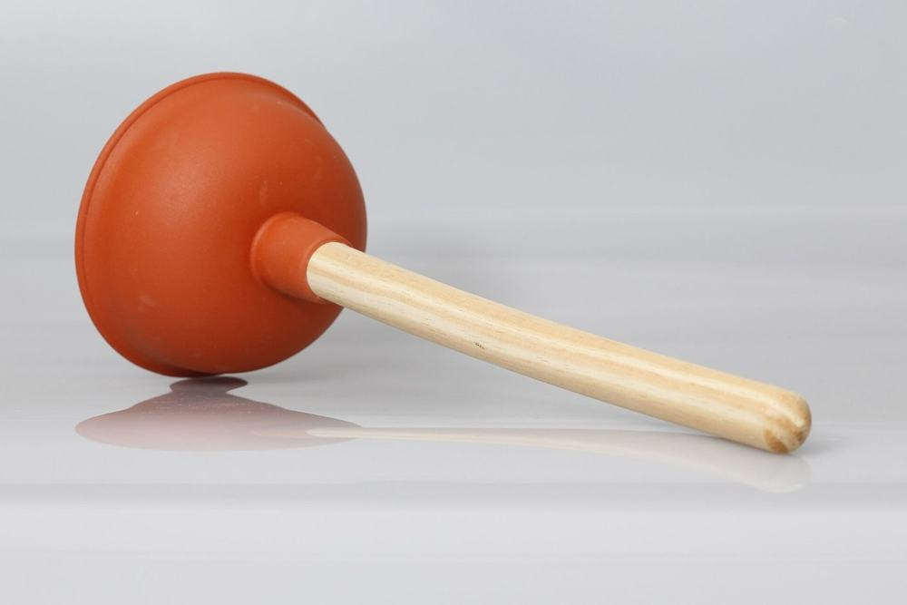
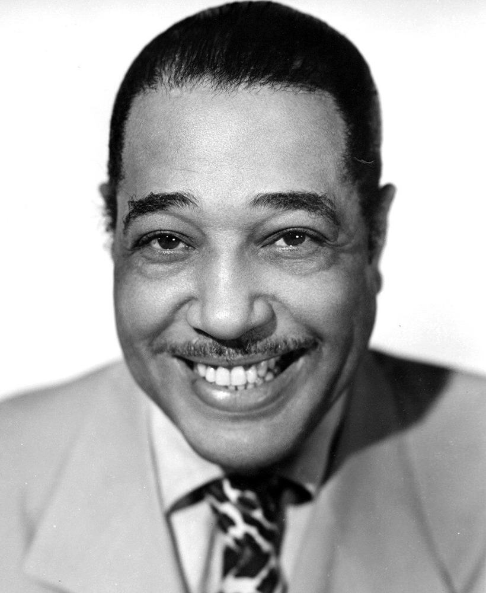

故事
小號那種哇哇、像在說話的聲音，是靠一個馬桶吸盤吹出來的。二十年代末的紐約，Duke Ellington 的樂團每晚在俱樂部演出。小號手 Bubber Miley 手上，拿著一個拆掉木柄的橡膠吸盤。
他把吸盤在喇叭口前一開一合。聲音從悶住變成打開，像人在哭、在笑、在吼。這招他是跟更早的前輩學的，但他把它吹得最有名。

Ellington 樂團被叫做叢林風格的聲音，就是從這裡來的。現在樂器行還買得到專門給小號用的吸盤弱音器。也有樂手直接去五金行，買真的馬桶吸盤。下次聽到小號在哇哇叫，想想那個馬桶吸盤。
故事後面
Bubber Miley 是 Duke Ellington 早期樂團的小號手。他用拆掉木柄的橡膠吸盤在喇叭口一開一合，吹出像人聲的「哇哇」聲。
這種技巧他是跟更早的前輩學的，但他把它吹得最有名，也塑造了 Ellington 樂團在 Cotton Club 時期的「叢林風格」。
到今天，樂器行還買得到專門的吸盤弱音器，也有人直接用五金行的馬桶吸盤。

這樣聽
聽小號像在嘟噥、在哭，那就是吸盤在動。
逐句英文
That wah-wah, talking trumpet sound comes from a toilet plunger.
In late-1920s New York, Duke Ellington's band played a club every night.
Trumpeter Bubber Miley held a rubber plunger with the wooden handle removed.
He opened and closed it in front of the bell.
The sound went from muffled to open, like someone crying, laughing, growling.
He learned the trick from earlier players, but he made it famous.
The Ellington band's so-called jungle sound grew out of this.
Music shops today still sell plunger mutes made for trumpet.
Some players still just buy a real plunger at the hardware store.
Next time a trumpet goes wah-wah, think of that plunger.
查證筆記與出處
Gemini 稿說他「發明」這種聲音，已改成「跟前輩學、讓它出名」（前輩如 King Oliver）。「到五金行買真吸盤」為樂器常識描述。
https://en.wikipedia.org/wiki/Bubber_Miley
https://en.wikipedia.org/wiki/Plunger_mute
一分鐘影片版在 Instagram @jazz101tw。